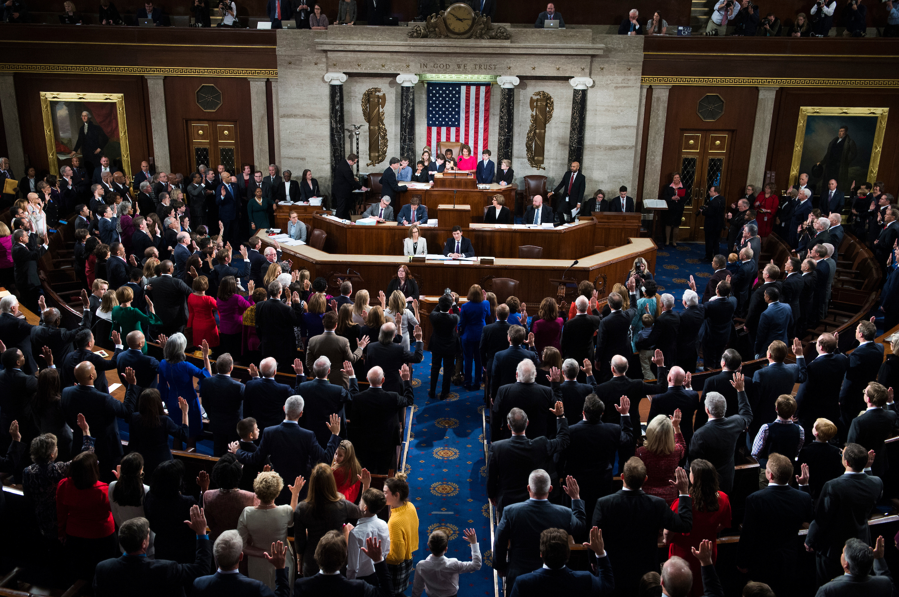

The House of Representatives has 435 voting Members and five Delegates, each serving a two year term, and one Resident Commissioner who serves for four years. The House of Representatives is referred to as the lower house of the United States Congress, because it has more Members than the Senate. It also has powers not granted to the Senate, like the ability to elect the President if the Electoral College is tied. The creation of the House of Representatives addressed the wishes of the delegates from larger states during the Philadelphia Convention. States are divided into congressional districts, based on population, and each Congressional district is represented by one Member. If an entire state’s population does not meet the population criteria for a district, then a Member is elected “at large,” meaning he or she represents the entire state. Both Vermont and Montana are represented by Members at Large.
